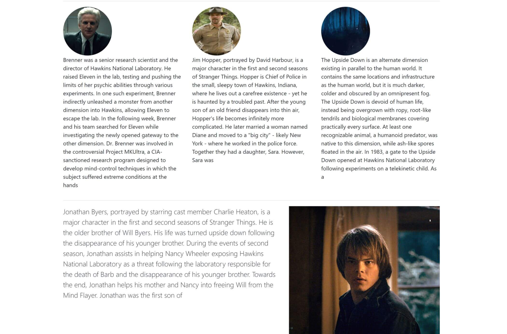
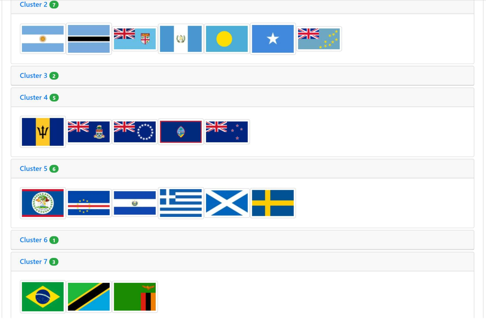
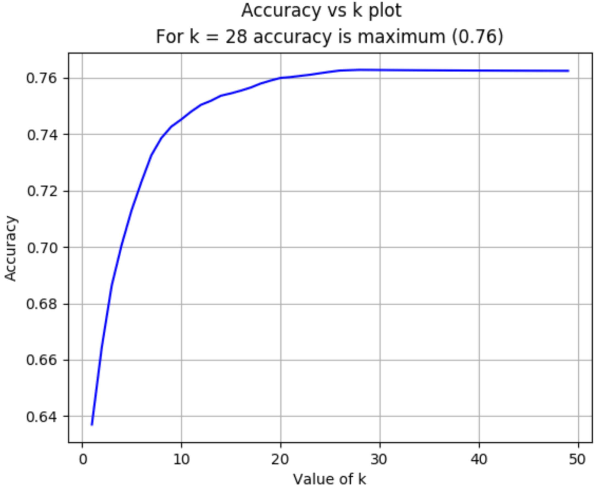
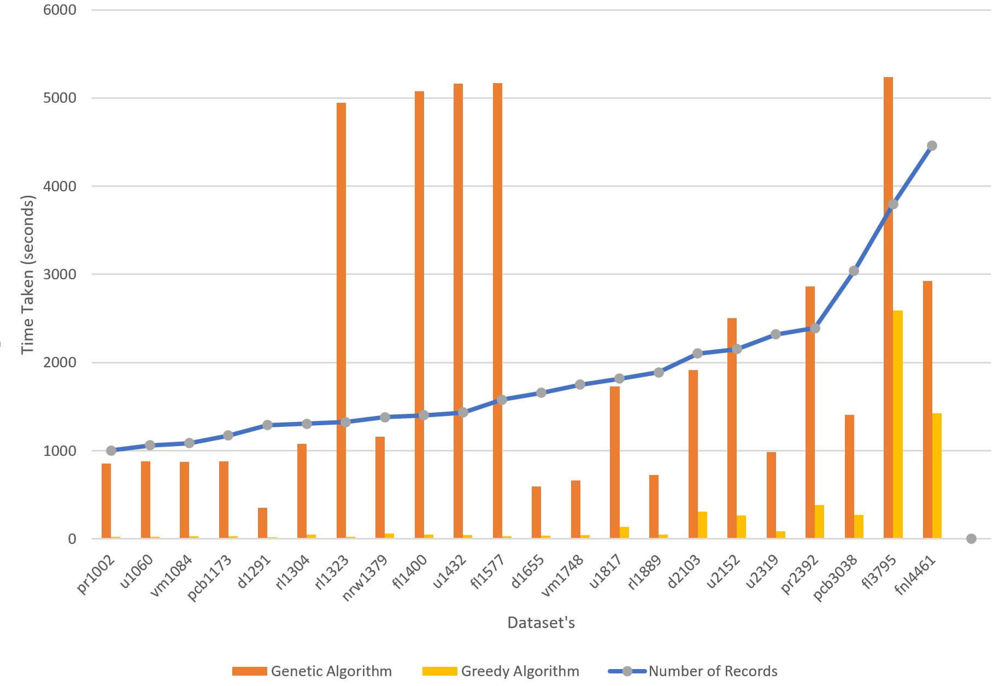
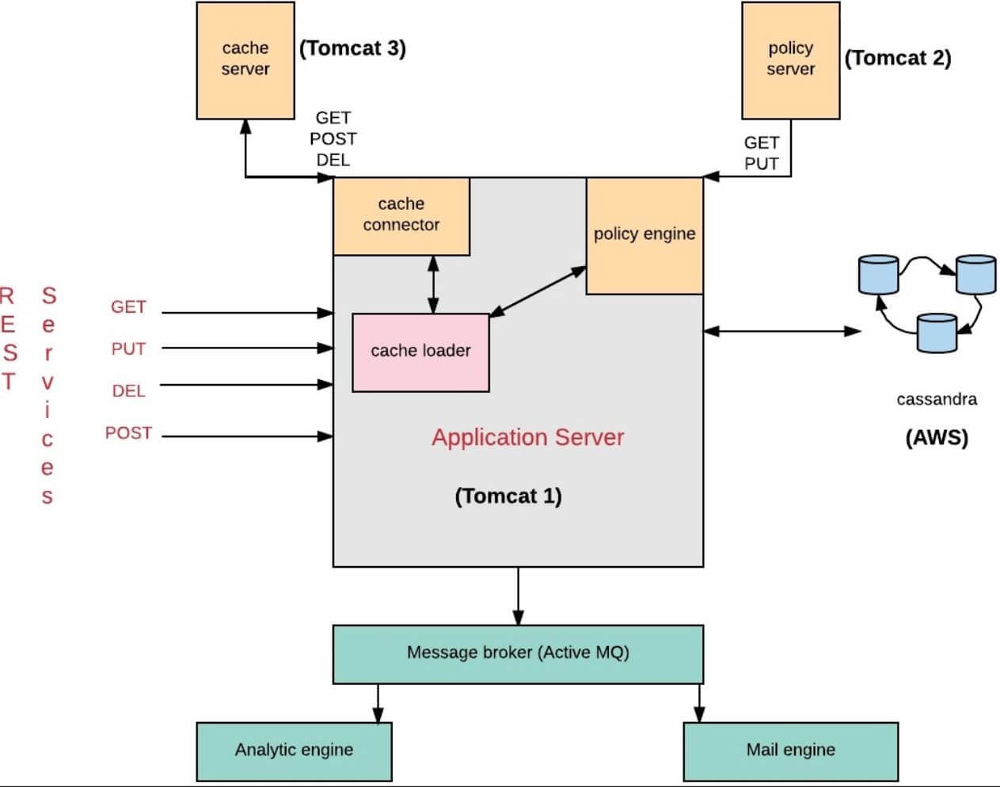
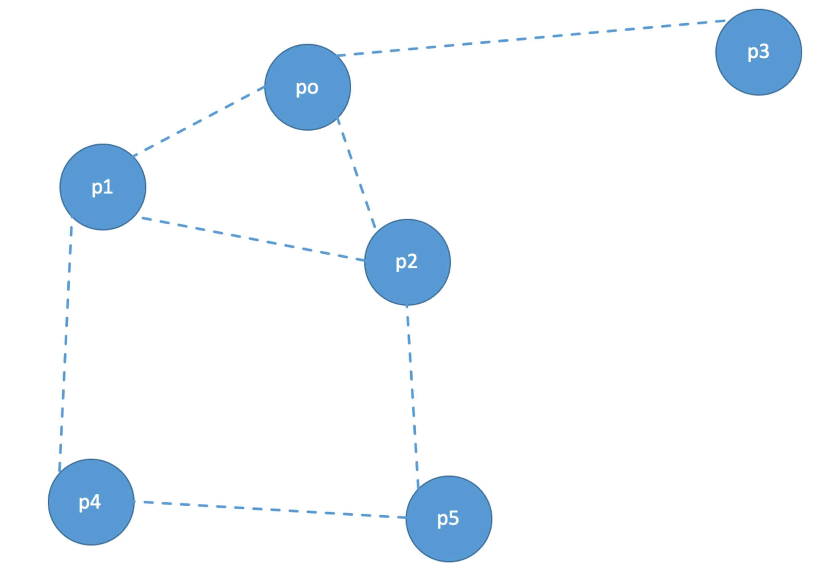
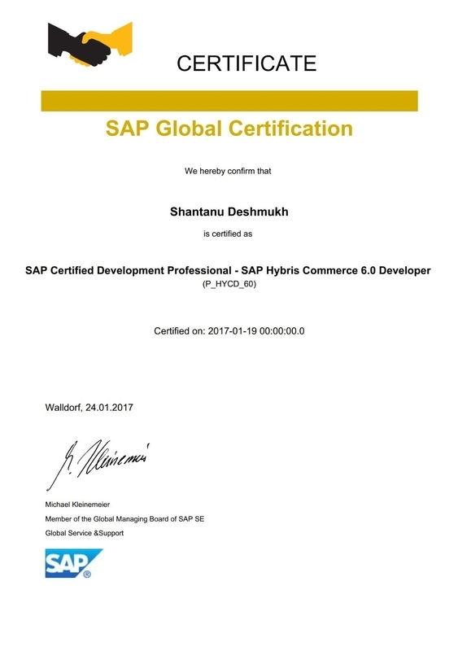
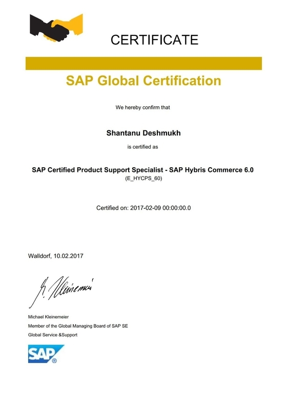

Distributed Systems & Reliability
Built and operated highly available services, failover architecture, and resilient feed pipelines serving global traffic and supporting high-severity incident response.
Software Engineer with 7+ years of experience and a research-oriented mindset. Adept at solving problems in varied domains from large-scale backend and frontend systems to Machine Learning and Artificial Intelligence. Reliable, responsible and a strong team player. Expert in developing high-quality code and maintainable systems.
- Writing product and system development code
- Building highly resilient and always available systems serving billions of requests per day
- Building backend services and front-end user interfaces for large-scale consumer-facing applications
- Orchestrating release workflows and pipelines; applying standardized pipelines via APIs to achieve CI and CD using industry-standard tools
- Reviewing code written by peers, providing feedback to ensure that it follows best practices, including checking that the code adheres to style guidelines, is accurate, is secure and testable, and is efficient. Ensuring that the code is of high quality and meets the project's and company's standards
- Collaborating between team members and often between multiple teams, to ensure seamless development and bug fixes in feature rich code base
- Responsible for identifying and prioritizing product or system issues, debugging them, and resolving them by analyzing their impact on the service operations and quality
- Using Deep Metric Learning for product detection and exposing it via REST-ful Flask
API
- Performing Hyper-parameter optimization to train different models like vgg,
resnet, mobilenet, inception, etc
- Modifying existing models, adding/removing layers and analyzing their performance to select the best
one as per the use case and requirements
- Scrapping and pre-processing product/object images from various client websites
- Using Google Cloud virtual instance, AWS S3 bucket, AWS Dynamo db,
AWS CodeStar and other cloud services
- Classification of Inhibitors of Hepatic Drug Transporters using tradition machine learning and deep learning
- Used natural language processing to convert unstructured data to a structured format and storing it in MongoDB
- Built a web application using MEAN Stack to showcase the structured information.
- Funded by the RSCA(Research, Scholarship, Creative Activity ) Award funding (2017-2018)
- Worked on a web Implementation with a Consumer and Industrial Products Industry's client.
- Worked on Java, designing and developing multiple business flows for a B2B Web Implementation.
- Worked on various Web content management systems majorly, Wordpress.
- Created banners and flyers using Photoshop
- Mantained the website realtykart.com, specifically, adding/removing/editing webpages(
PHP, HTML, jQuery, js), using google apps, AdWords, managing domains and hosting, etc.
- Designing and editing digital banners/images using Photoshop, gimp, etc
"Machine Learning for Classification of Inhibitors of Hepatic Drug Transporters"
"Fine Object Detection in Automated Solar Panel Layout Generation"
"PediatricDB: Data Analytics Platform for Pediatric Healthcare"


Designed a few static web sites working for a proffessor like this




GPA: 4.0
Semester 1 : Artificial Intelligence(A+) User Interface Design(A) & Distributed Computing(A+) Semester 2 : Desing And Analysis of Algorithms(A), Advanced Programming Language Principles(A) & Web Intelligence(A)
GPA: 71/100

SAP Certified Hybris Development Professional

SAP Certified Hybris Support Specialist
SAP Certified Hybris Commerce Business Analyst
Senior Software Engineer · Microsoft
11+ years across frontend, backend, and infrastructure engineering with a strong record in reliability, security, automation, and cross-team execution. Recent scope includes resilient multi-cloud deployment automation, secure-by-default platform work, and intelligent assistant integrations for service health workflows.
Built and operated highly available services, failover architecture, and resilient feed pipelines serving global traffic and supporting high-severity incident response.
Led region-agnostic deployment templates, infrastructure validation workflows, and cross-team template migration support for global and specialized cloud environments.
Delivered managed identity transitions, audit tracing, secure VM/boot controls, and compliance-focused infrastructure changes aligned with secure-by-default engineering goals.
AI recruiters and hiring managers often look for production ownership, architecture depth, and clear outcomes. These are the strongest AI-related signals from my work to date.
Challenge: Enable faster, richer responses to operational questions.
Action: Led integration of intelligent assistant handlers into service health systems for multi-faceted query responses and improved incident context.
Impact: Helped power externally visible feature previews and improved team readiness to operationalize AI-assisted product experiences.
Challenge: Scale quality and safety validation of assistant behavior.
Action: Built internal automation to run thousands of validation queries in a single day and shared tooling across teams.
Impact: Increased repeatability of assistant testing and reduced manual validation overhead during release cycles.
Evidence: Published ML research, computer vision internship work, and NLP-focused projects spanning deep metric learning, model experimentation, and production-minded API exposure.
Why this matters: Provides practical ML grounding that complements large-scale software/system engineering experience.
Current direction: Continue applying AI in engineering workflows while building reliable cloud platforms, resilient data/service pipelines, and secure operational systems.
Target roles: Senior/Staff AI Engineer, AI Platform Engineer, Distributed Systems Engineer, and Cloud Platform Engineer.
Designed and implemented resilient feed/failover patterns that maintained service continuity during major outages. Combined architecture improvements with operational validation and release rigor.
Led infrastructure creation, service deployment, and validation automation for new cloud regions and specialized environments. Reduced manual setup friction and improved rollout consistency.
Delivered managed identity and auditability capabilities, hardened infrastructure configurations, and compliance-aligned workflows under security-focused engineering initiatives.
Designed distributed systems combining messaging, caching, and data stores (Cassandra, Hazelcast, ActiveMQ, Spring) and built event/data-processing solutions using Kafka and Storm.
Shipped reliability-focused features, health event visibility improvements, and UI testing foundations to reduce regressions and improve incident awareness.
Drove UI refresh work, monitoring/reliability improvements, and cross-team architecture alignment while mentoring peers and improving engineering quality practices.
Delivered region-agnostic automation and resilient service architecture, then expanded into intelligent assistant integrations and tooling shared across teams.
Led secure platform improvements (identity, auditability, hardened infrastructure), expanded mentoring scope, and operated effectively through demanding security waves.
Led cloud region expansion automation, failover readiness, and pipeline optimization while supporting multiple partner teams and strengthening quality guardrails.
Built from recurring requirements seen in current Senior/Staff AI, cloud, and distributed-systems roles (Google, Amazon, Meta, Apple, Netflix, Microsoft, NVIDIA, OpenAI, Anthropic).
| Recruiter/Hiring Requirement | Evidence from Background | Where to See It |
|---|---|---|
| Large-scale distributed systems ownership | Resilient systems, failover architecture, high-availability delivery during outages | Selected Engineering Work + Experience |
| Cloud/platform automation depth | Region-agnostic templates, global cloud rollout automation, pipeline optimization | Selected Engineering Work + Timeline |
| AI/ML relevance with execution focus | Assistant handler integration, AI red-team automation, ML publications/projects | AI & Intelligent Systems Focus |
| Security, reliability, and operations maturity | Managed identity, audit tracing, secure configuration rollout, on-call/incident depth | Core Strengths + Timeline |
| Senior-level collaboration and influence | Cross-team delivery, mentoring engineers/interns/vendors, reusable tooling shared widely | Career Impact Timeline + Experience |
If you're hiring for senior/staff-level roles in AI-enabled systems, distributed systems, cloud/platform engineering, or reliability/security-focused product infrastructure, I’d be glad to connect.